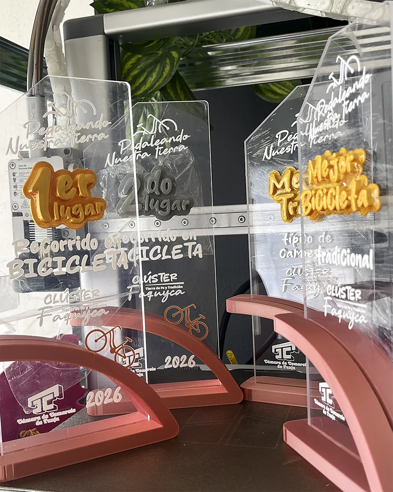
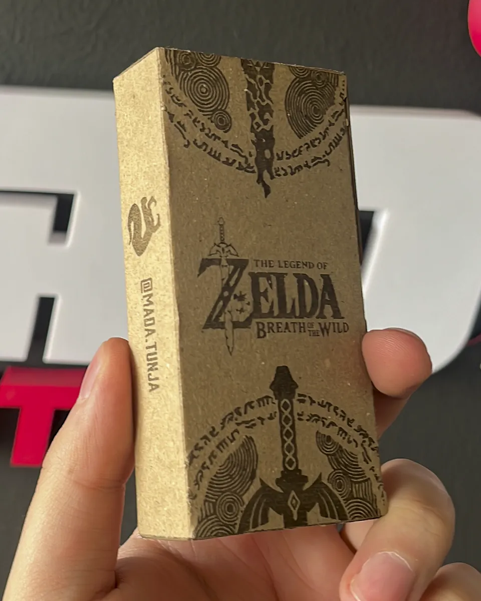

MODELADO Y ESCANEO 3D
Ingeniería inversa con escáner 3D de alta precisión, modelado técnico en CAD y escultura digital de personajes listos para fabricación.
Tu proyecto inicia aquí. Bien pensado. Bien hecho. Desarrollamos piezas a medida en Tunja con despachos a todo el país.
Combinamos precisión técnica CAD, escultura digital y manufactura aditiva para materializar ideas que no existen en catálogo.
Ingeniería inversa con escáner 3D de alta precisión, modelado técnico en CAD y escultura digital de personajes listos para fabricación.
Galardones corporativos, piezas conmemorativas y artículos personalizados en impresión 3D FDM y resina con acabados limpios.
Personalización de precisión en madera, cuero, acrílico y materiales especiales para marcas, eventos y gastronomía.
Diseño espacial de stands, recorridos virtuales en tiempo real y renders fotorrealistas de gran formato para ferias y eventos.
Una muestra de piezas fabricadas, escaneos técnicos y desarrollos visuales.

Producción en serie corta con geometría personalizada y acabados multicapa.
Captura tridimensional de piezas físicas para ajuste exacto y reproducción.

Grabado láser de alta precisión sobre cartón kraft, cuero y madera para ediciones especiales y branding.
Desarrollo de personajes 3D optimizados tanto para medios digitales como impresión física.
Planimetría estructural, visualización arquitectónica y coordinación en sitio.
Fabricación aditiva reforzada para exhibición comercial y activaciones de marca.
Mira cómo pasan los diseños de la pantalla a la pieza física en nuestro perfil @mada.tunja.
Opiniones reales de empresas, instituciones y creadores en Boyacá y Colombia.
“Excelente nivel de detalle y cumplimiento en la entrega. Supieron aterrizar exactamente la idea que necesitábamos para nuestros trofeos.”
“Muy buena asesoría técnica desde el modelado 3D hasta la pieza final. Se nota el cuidado en cada acabado.”
“Trabajo impecable en grabado láser y exhibidores para nuestro local. Recomendados al 100%.”